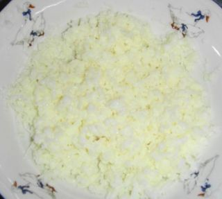
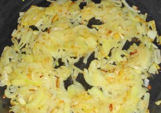
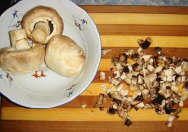
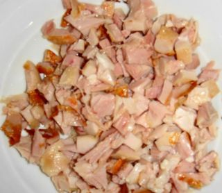
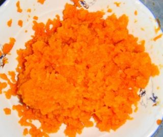
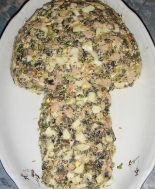

Шаг 1: подготовим яйца.

Яйца сварим в кастрюле с холодной водой на среднем огне в течение 10 минут. Вареные яйца охладим под струей холодной воды и почистим. Отделим белки от желтков. Натрем на мелкой терке отдельно белки и желтки.
Шаг 2: подготовим лук.

Лук почистим от шелухи. Для того чтобы глаза не слезились, периодически смачиваем нож и луковицы под струей холодной воды. Порежем ножом на разделочной доске на тонкие полукольца. Разогреем сковороду с растительным маслом на сильном огне. Поджарим лук до золотистой корочки на среднем огне в течение 7 минут, периодически перемешивая лопаточкой.
Шаг 3: подготовим шампиньоны.

Свежие шампиньоны нарежем ножом на разделочной доске на маленькие кубики. Затем обжарим на сковороде с растительным маслом до готовности в течение 15 минут.
Шаг 4: подготовим куриную грудку.

Куриную грудку нарежем ножом на разделочной доске на маленькие кубики.
Шаг 5: подготовим морковь и сыр.

Морковь сварим в кастрюле с холодной водой на среднем огне в течение 30 минут. Затем охладим при комнатной температуре. Сыр и морковь натрем на мелкой терке.
Шаг 6: готовим салат «Грибок».

В миске смешиваем куриную грудку, грибы, лук, желтки яиц и половину белков. Солим и перчим по вкусу, смазываем майонезом и перемешиваем ложкой. Затем на сервировочной тарелке выкладываем салат в форме гриба. На шляпку гриба выкладываем морковь, под шляпку сыр. На ножку выкладываем оставшиеся яичные белки, внизу ножки уложим укроп. Украсим шляпку гриба листиком петрушки.